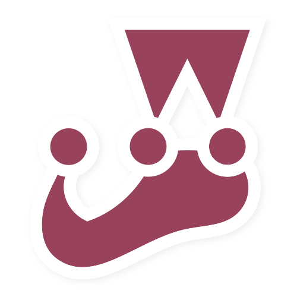
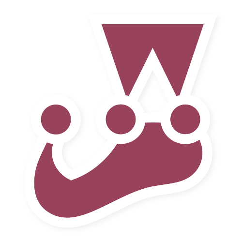
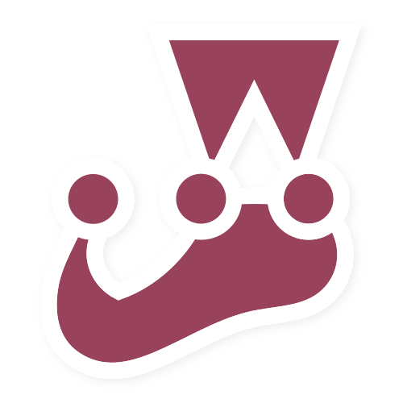

Nível técnico
Frontend


 

Backend


Sou dedicada e apaixonada pelo que eu faço. Formação acadêmica voltada para Gestão, Tecnologia e Análise de Negócios. Humildade, Desenvolvimento, Adaptação, Visão e Engajamento carrego comigo o tempo todo, pois é o que me faz crescer em todas os aspectos da vida.
Idiomas
Nível técnico
Frontend

Backend
Experiências Profissonais
Postmetria - Outubro de 2017 até Julho 2021
Chief Customer Officer (CCO)
Atividades: